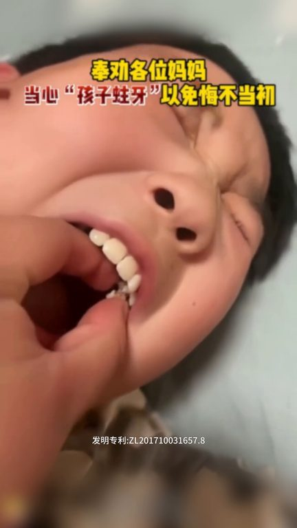
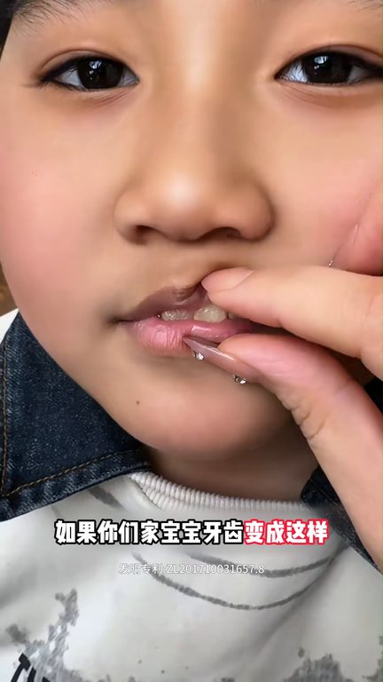
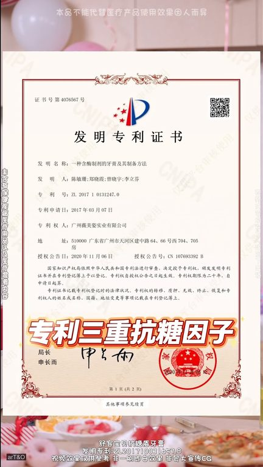
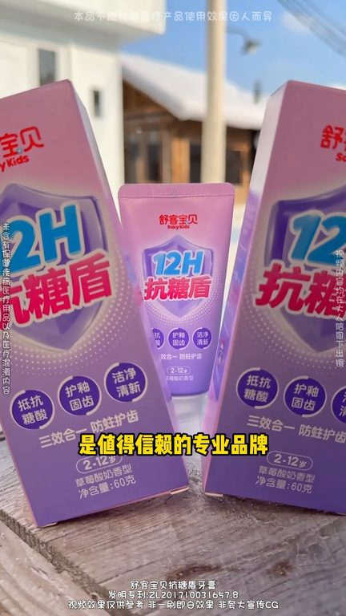

TOP 1 · 代表素材深度拆解
核心放量 强点击
视频为原始素材 HTTPS 链接；点击后加载，建议在网络环境良好时播放。
29.9万素材消耗
2.01%CTR
12.2%类目消耗占比
+0.65pp较类目均值
表现判断
该素材是类目内第 1 名，属于“核心放量”；CTR 高于类目均值。消耗体现承接规模，CTR 体现首屏与定向效率，两项应结合判断，不能仅以单指标下结论。
表达标签
口播三段式证据
开场钩子你看到没有你看到没有你看
中段论证不过你们家宝宝牙齿变成这样嘴巴还有难闻的味道这就是没做抗糖和做了抗糖的区别这是孩子牙齿该做抗糖了不要给孩子用骨头牙膏了赶紧给孩子换上抗糖防住牙膏给大家推荐书克宝贝加的牙膏了专门为爱吃糖的小朋友设计了装递
结尾转化不要给孩子用骨头牙膏了赶紧给孩子换上抗糖防住牙膏给大家推荐书克宝贝加的牙膏了专门为爱吃糖的小朋友设计了装递三种抗糖因子不仅防住想抗糖抗酸一刷走二保护三隔离一天刷两次牙就相当于用了24小时的抗糖保护品这样是值得信赖的专业品牌推荐给各位家长
有效点
- CTR 2.01% 高于类目均值 1.36%，开场或人群指向具备点击优势
- 素材已进入类目消耗 Top，核心表达具备继续拆分测试的价值
迭代动作
- 保留当前高效钩子，复制 3 个变量版本：人物、首句和首帧分别单变量测试
- 中段每 5–8 秒补一次画面变化或证据点，避免同景口播造成信息疲劳
- 促销口径与资质信息保持同屏可验证，结尾只保留一个明确行动指令
合规关注

钩子建立 · 1.8s

场景/问题展开 · 13.3s

卖点证据 · 30.5s

转化收口 · 42.0s
查看完整口播摘要
你看到没有你看到没有你看看清楚了吗它是化掉的不过你们家宝宝牙齿变成这样嘴巴还有难闻的味道这就是没做抗糖和做了抗糖的区别这是孩子牙齿该做抗糖了不要给孩子用骨头牙膏了赶紧给孩子换上抗糖防住牙膏给大家推荐书克宝贝加的牙膏了专门为爱吃糖的小朋友设计了装递三种抗糖因子不仅防住想抗糖抗酸一刷走二保护三隔离一天刷两次牙就相当于用了24小时的抗糖保护品这样是值得信赖的专业品牌推荐给各位家长